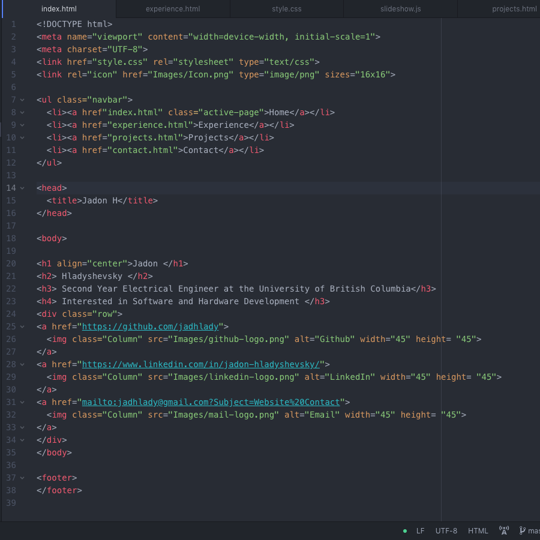

SIMPLE RISC MACHINE
I developed a working computer instruction set from scratch using Verilog code and a DE1-SOC FPGA
along with a partner. We drafted circuit diagrams to fully comprehend the operation of Verilog code being executed,
and gained an understanding of digital signals and systems as well as techniques to thoroughly debug complex code.
Oven Controller
As part of a mid-degree project, me and a group of 5 others were required to build an oven
reflow controller. This type of oven is instrumental in soldering pcbs and creating working circuits.
We completed this task by programming the interface and underlying operations in assembly
for the microcontroller we were using. We then gained a deeper understanding of circuit operation
while connecting the thermocouple and other components needed to enable successful operation of our
controller.
Pinball Machine

I learned basic wood working to design and build a pinball machine controlled by a Raspberry Pi.
From there, I developed code using python to control a connected LCD scoreboard and
included a number of GPIO peripherals including light and pressure sensors.
Pictured is an initial prototype of my woodworking design before electronics were implemented.
Personal Webpage
My interest in programming languages encouraged me to learn HTML, CSS and Javascript, and I was
inspired to create a website to further develop and showcase my skills. The website you are viewing
right now was made from scratch by me in these 3 languages as a fun project over my reading break.
Although learning 3 languages and how to incorporate them at once was quite a challenge, being
able to overcome these barriers was its own reward!